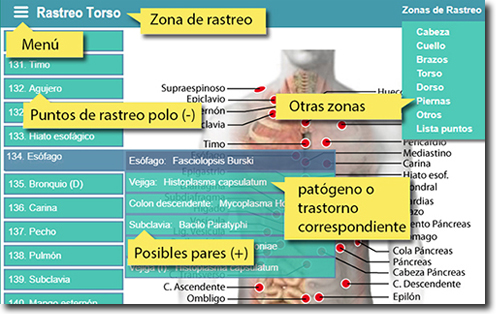
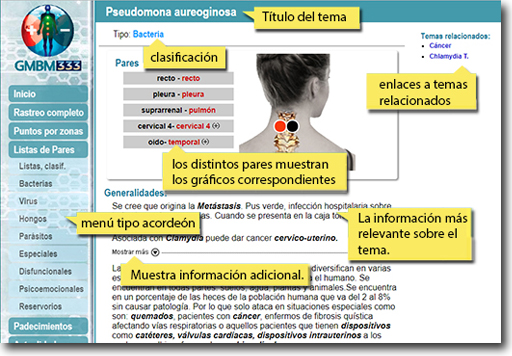

Guía para uso de la Guía
Enero 2020 |
En esta sección le ofrecemos una breve introducción al uso de la guía:
Le recordamos que el Biomagnetismo Médico no sustituye la consulta de un profesional de la salud, pero puede ser de gran ayuda en el reestablecimiento del equilibrio energético del organismo humano (y de otras especies).
Esta guía está diseñada para quienes hayan asistido por lo menos al curso de Primer nivel del Biomagnetismo Médico. Sin embargo, aún sin conocer a fondo el sistema usted puede usar la guía en base a los síntomas o padecimientos que quiera tratar, para lo cual hemos creado una lista de los principales padecimientos que se pueden tratar con Biomagnetismo Médico.
Los profesionales del biomagnetismo saben la importancia de realizar un rastreo completo para lograr un buen diagnóstico lo cual ahora ofrecemos una lista con más de 330 puntos de rastreo que puede usted seguir por zonas del cuerpo comenzando por la cabeza y terminando en los pies.
Nueva lista de Rastreo por zonas:

La nueva lista de rastreo se divide por zonas del cuerpo: cabeza, cuello, brazos, torso, dorso, piernas y otros puntos. De esta forma usted puede realizar un rastreo de los principales puntos conocidos hasta la fecha. Cada uno de los 337 puntos muestra una lista con los diversos pares que puede encontrar.
Si usted maneja el rastreo bioenergético (mental) le puede ser de utilidad la división por zonas que presentamos en la presente guía. O bien, hacer un rastreo diferenciado por tipos de pares según le convenga: especiales, disfuncionales, psicoemocionales, reservorios o por patógenos: virus, bacterias, hongos o parásitos.
Cada tema corresponde a un patógeno, trastorno energético o psicoemocional que se puede tratar mediante el biomagnetismo. La información más relevante la encontrará al principio del texto. Si usted desea ahondar en el tema puede consultar la información pulsando el botón: (sólo disponible en la Guía offline).

Actualmente un sólo padecimiento puede tener correspondencia con uno, dos o más pares, usted puede ver los principales pares correspondientes al tema con gráficas que muestran los puntos con referencias anatómicas de los órganos o sistemas que se están tratando.
Nota: en las gráficas el punto negativo se muesta en color negro, lo cual indica que esa es la polaridad del imán que va dirigida hacia el cuerpo. Lo mismo en el polo positivo (rojo).
Mostramos una lista de las abreviaturas empleadas en esta guía:
| (bi) | bilateral | que el punto se encuentra en ambos lados del cuerpo: izquierdo y derecho. |
| (I) | izquierdo | En el lado izquierdo del cuerpo |
| (D) | derecho | En el lado derecho del cuerpo |
| (hl) | homolateral | O ipsilateral: en el mismo lado del cuerpo |
| (cl) | contralateral | Lado opuesto del cuerpo |
| (-) | negativo | Polo negativo (negro) del imán. |
| (+) | Polo positivo rojo) del imán. | |
| nuevo | Par agregado en la nueva versión |
En esta sección: